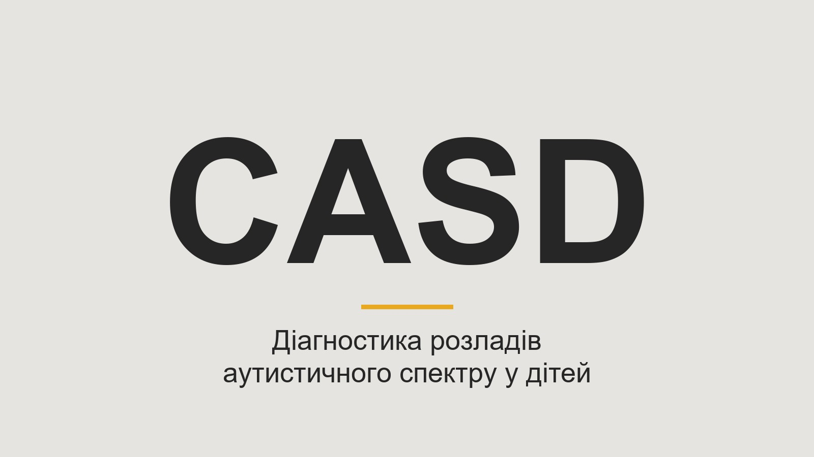
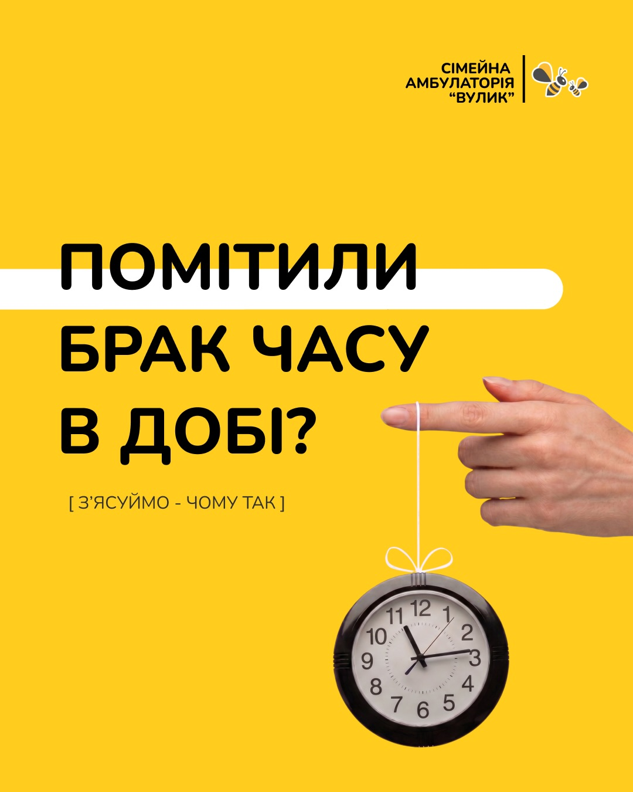
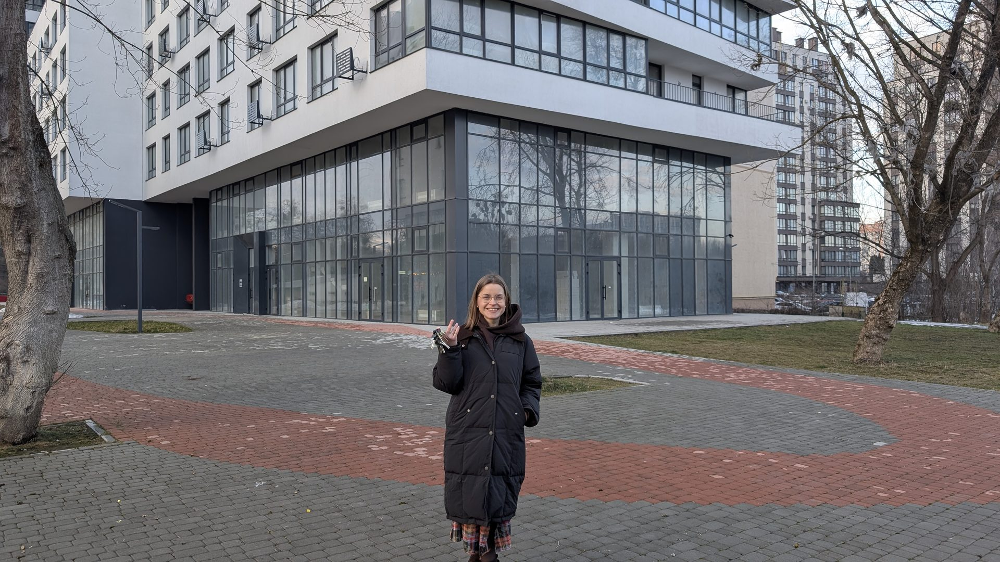

Новини та публікації
Новини, поради та акції від команди клініки «Вулик»

«Це буде закритий гештальт від 2021 року»: засновниця «Вулика» — про нову амбулаторію на Лінкольна
Ярина Пікулицька — про нову локацію на вул. Лінкольна, 4: чому саме там, які напрями запрацюють, що буде для дітей і як відбуватиметься переїзд з Тичини.

Нові послуги: УЗД травної системи та еластографія печінки
Гастроентеролог Станіслав Кравчук про два нові УЗД-обстеження у «Вулику»: як оцінюють жорсткість печінки та стан кишківника, кому вони показані та скільки коштують.

Чому дитина відмовляється від їжі в спеку?
Педіатр Христина Кобрин пояснює, чому влітку у дитини зникає апетит, як скоригувати раціон і питний режим — і за яких симптомів відмова від їжі стає приводом звернутися до лікаря.

Пакет «Турбота про себе» — гінекологічний чекап
Літній пакет жіночого здоров'я від Ірини Стельмах: консультація, мазок на ВПЛ і ПАП-тест, УЗД молочних залоз і органів малого тазу — 3900 грн.

Дитяча ехокардіографія (УЗД серця) — тепер у «Вулику»
Відтепер ехокардіографію (УЗД серця) у «Вулику» проводить Наталія Кришеник. Що оцінює дослідження, коли його варто зробити дитині та скільки воно коштує.

CASD — діагностика розладів аутистичного спектру у дітей
Новий діагностичний інструмент у «Вулику»: високоточна скринінгова шкала РАС у дітей від 1 до 17 років. Тестування проводить психолог Наталія Мудрик.

Чи потрібен зволожувач повітря?
Катерина Горон, лікар-оториноларинголог, пояснює коли зволожувач справді потрібен, яка вологість є нормою і як сухе повітря впливає на ЛОР-органи.

Мені б ще кілька годин в добі! Як впоратись із відчуттям постійної гонки
Встигнути все, скрізь і бажано якнайшвидше — знайомо? Розбираємось, звідки береться відчуття постійного перевантаження і що з цим робити.

Програма «Допомога по догляду до 1 року»
Державна виплата 7 000 грн на місяць може покрити медичні послуги. В амбулаторії «Вулик» нею можна розрахуватися за консультації педіатрів та вакцинацію.

Скринінг 40+ — доєднуємось до національної програми
Амбулаторія «Вулик» офіційно долучається до програми «Скринінг 40+». Підготували відеоінструкцію — покроковий алгоритм для зручного візиту.

Нова локація на вул. Лінкольна, 4
Клініка «Вулик» переїздить у нове просторе двоповерхове приміщення. Більше кабінетів, сучасне обладнання, зручна локація. Відкриття — листопад 2026 року.

З Всесвітнім днем сімейного лікаря! 💛
Вітаємо наших чарівних лікарок — Когут Маріанну, Миронець Ольгу, Курилець Оксану та Бігун Наталію. Дякуємо за Вашу турботу і відданість нашим пацієнтам.